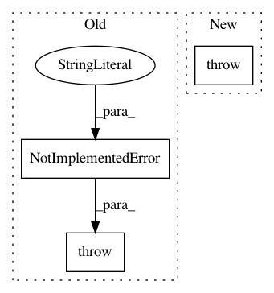

77e91e8bc57cefadc8607a0866ab51ba33b01762,src/sdk/pynni/nni/nas/pytorch/base_mutator.py,BaseMutator,forward,#BaseMutator#,54
Before Change
return super().__setattr__(key, value)
def forward(self, *inputs):
raise NotImplementedError("Mutator is not forward-able")
def enter_mutable_scope(self, mutable_scope):
pass
After Change
@property
def forward(self, *inputs):
raise RuntimeError("Forward is undefined for mutators.")
def enter_mutable_scope(self, mutable_scope):
Callback when forward of a MutableScope is entered.
In pattern: SUPERPATTERN
Frequency: 5
Non-data size: 3
Instances
Project Name: microsoft/nni
Commit Name: 77e91e8bc57cefadc8607a0866ab51ba33b01762
Time: 2019-11-20
Author: v-yugzh@microsoft.com
File Name: src/sdk/pynni/nni/nas/pytorch/base_mutator.py
Class Name: BaseMutator
Method Name: forward
Project Name: NervanaSystems/nlp-architect
Commit Name: 9267d77a87ac5d6736953f4822deab36b20945c7
Time: 2020-09-22
Author: daniel.korat@intel.com
File Name: nlp_architect/models/absa/inference/inference.py
Class Name: SentimentInference
Method Name: run_multiple
Project Name: ray-project/ray
Commit Name: c4e273920f517b18c99fbabca49135dd6e30e683
Time: 2020-12-22
Author: me@barakmich.com
File Name: python/ray/experimental/client/__init__.py
Class Name: RayAPIStub
Method Name: init
Project Name: keras-team/keras
Commit Name: c7c53725098545256e3b2095c9b05285e3da3676
Time: 2015-07-03
Author: francois.chollet@gmail.com
File Name: keras/layers/normalization.py
Class Name: LRN2D
Method Name: __init__
Project Name: OpenMined/PySyft
Commit Name: 9dc09f3d3c2d78390adffe847d0b44a8afbc5f90
Time: 2020-08-26
Author: 33666625+abogaziah@users.noreply.github.com
File Name: syft/frameworks/torch/tensors/interpreters/replicated_shared.py
Class Name: ReplicatedSharingTensor
Method Name: __switch_public_private